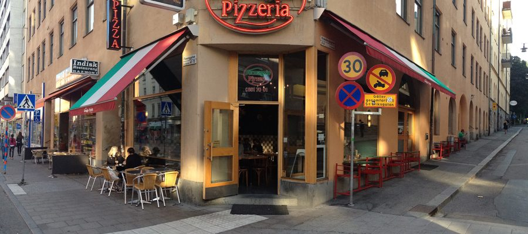
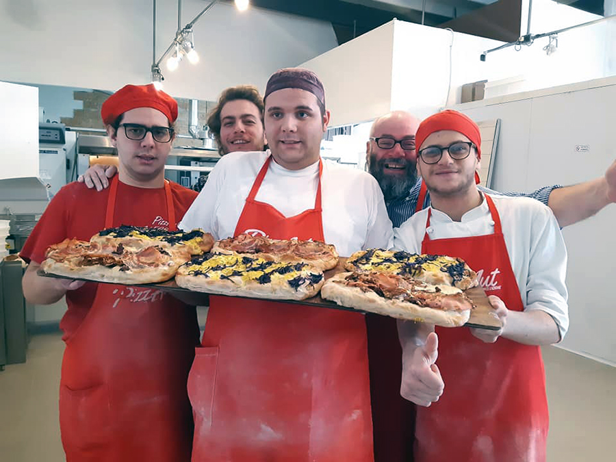

Rólunk
Bemutatkozás
Üzleti koncepciónk alapját a gasztronómia és a vendéglátás szeretete adta. A tulajdonosi kör tagjainak többsége már az üzlet nyitását megelőzően is évekig a vendéglátásban dolgozott, tapasztalatuk mai napig nagy segítséget nyújt a vállalkozás irányításában.
Filozófiánk, hogy elérhető áron kitűnő minőséget biztosítsunk. Ételeinket a rendelés felvétele után frissen készítjük, ezért vállaljuk a megrendelt étel egy órán belüli kiszállítását. Dolgozói gárdánknak van több kezdetektől velünk dolgozó tagja is, ez biztosítja az állandóságot ételeink minőségében.
A Formaggio Pizzéria vezetősége és személyzete egyaránt törekszik az egyre magasabb szintű követelményeknek eleget téve kiszolgálni vendégeit, reméljük hamarosan Önt is!
Nevünk
Pizzeriánk neve a pizza egyik legfontosabb alkotó elemének a sajtnak az olasz megfelelője. Így éttermünk neve egyesíti az eredeti pizza recept otthonát adó Olaszországot és a pizza egyik legfontosabb alkotóelemét a sajtot.
Shéfeink
Shéfeink olasz származású lelkes fiatal szakácsok, akikkel az üzlet alapítói olaszországi útjuk során ismerkedtek meg. Mindegyikük magasan képzett, kimagasló tapasztalattal rendelkező pizzákra szakosodott szakács.
